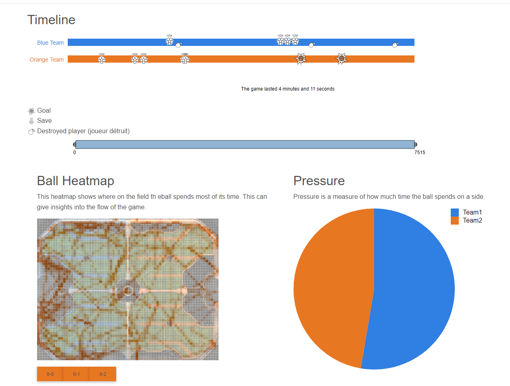

- tous les joueurs
- tous ses alliés
- tous ses adversaires
La timeline est une représentation visuelle des événements clés qui se produisent pendant un match. Elle permet aux joueurs de comprendre rapidement le déroulement du match et de repérer les moments importants.
La timeline de Rocket League comprend les fonctionnalités suivantes :
Buts : Les buts marqués par chaque équipe sont représentés sur la timeline. Chaque but est représenté par une icône de ballon de football, placée à l'endroit exact de la timeline où le but a été marqué.
Démolitions : Les démolitions (lorsqu'un joueur détruit un autre joueur en le percutant à grande vitesse) sont également représentées sur la timeline. Chaque démolition est représentée par une icône d'explosion, placée à l'endroit exact de la timeline où la démolition a eu lieu.
Sauvegardes : Les sauvegardes (lorsqu'un joueur empêche un but en déviant le ballon) sont représentées sur la timeline. Chaque sauvegarde est représentée par une icône de bouclier, placée à l'endroit exact de la timeline où la sauvegarde a eu lieu.
Info-bulles : Lorsque vous passez la souris sur une icône sur la timeline, une info-bulle apparaît, fournissant des informations supplémentaires sur l'événement. Par exemple, pour une démolition, l'info-bulle pourrait indiquer le nom du joueur qui a été détruit et le temps exact où la démolition a eu lieu.
La timeline est un outil puissant pour analyser un match de Rocket League. Elle vous permet de voir rapidement quand et où les événements clés ont eu lieu, ce qui peut vous aider à comprendre comment le match s'est déroulé et où vous pouvez vous améliorer pour les futurs matchs.
Représente la position du ballon tout au long de la game.
Le tableau des scores permet de visualiser les statistiques de chaque joueurs et d'avoir des statistiques précises lorsque l'on clique sur le joueur.
Les statistiques par équipe permettent la confrontation des scores totaux des deux équipes.
La pressure est représentée par un diagramme circulaire montrant quel pourcentage de la partie la balle a passé sur le demi-terrain de chacune des deux équipes.
Le score du joueur est de la couleur de son équipe, le score moyen des autres joueurs (ne l'incluant pas lui) est en gris.



Le slider permet de connecter les différents éléments de la partie Time-related statistics :